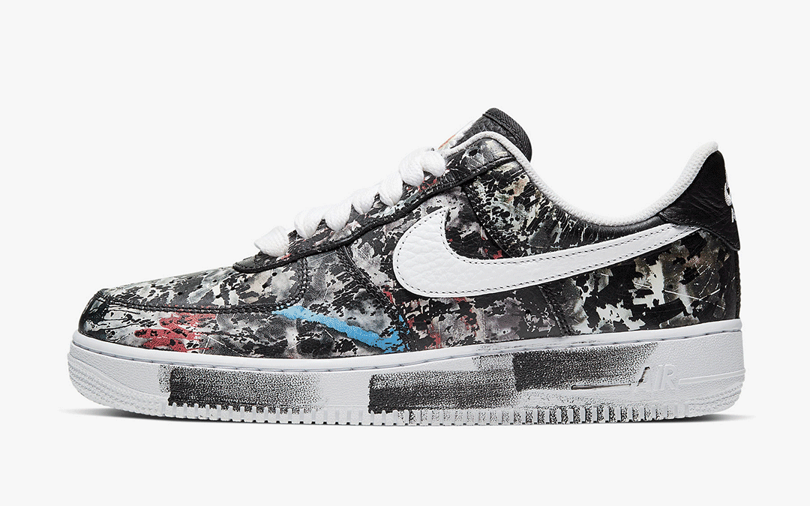
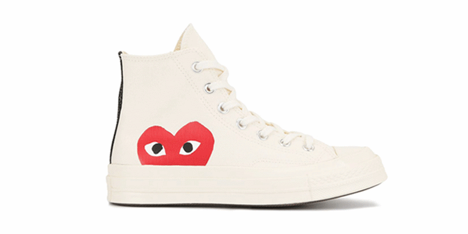
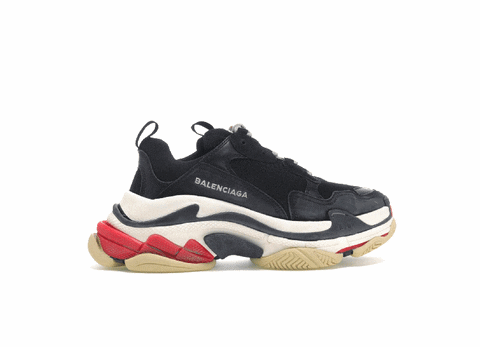
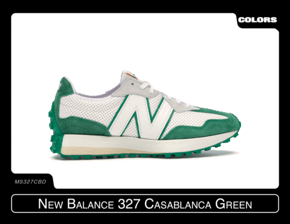
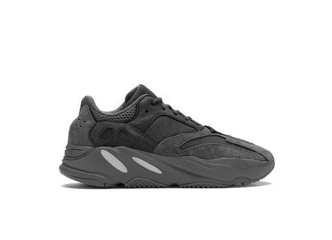

"el arte de los sneakers no nada mas es llevarlos o comrarlos es saber lo que llevas"
los sneakers son una cultura que llevan por años en la vida y cada vez la gente se va uniedno mas a ello, y ampliando el catalogo de los llamados skeakers,todo empezo por coleccion de jordans, ya sean los 1 los 3 los 4 los 6 etcc,la gente fue ampliado mas el catalogo, hoy en dia encuentas muchos pares que entran en la cultura sin ser jordans
JORDAN 1 "TRAVIS SCOTT"
JORDAN 3 "COOL GREY"
JORDAN 4 "TRAVIS SCOTT"
JORDAN 5 "OFF WHITE"
JORDAN 6 "TRAVIS SCOTT"
JORDAN 11 "BLACK/WHITE"
SB DUNK "PALOMO"
AF1 "FLOWER"

AIR MAX "1/97"
BLAZER MID 77 "CLASSIC"
CONVERSE "CDG"

BALENCIAGA "TRIPLE SSS"

new balance "CASABLANCA"

YEEZY "CARBON"

FORUM "BAD BUNNY"
(estos son uno de las siluetas de pares mas frecuentes que uno suele ver por las calles con sus respectivas fotos para que pueda identificarlos)
"AIR MAG"
el par mas caro de todo el mundo valuado en 1,0000 de dolares, su primera aparicion fue en la pelcula de volver al futuro de ahi sacaron pares super limitados de este, hoy en dia es muy raro de ver el par ya que muy poca gente lo tiene., si tuvieras el dinero lo comprarias???
(esta pagina web es informativa, su proposito es entretener e informar a la gente mas acerca de el mundo de el hype beast)